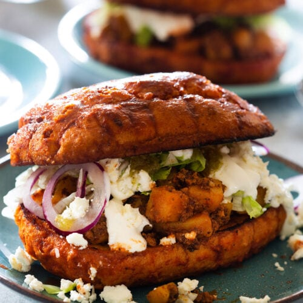

PAMBAZO
PREPARACION DEL PAMBAZO MEXICANO
El pambazo es un emparedado mexicano, cuyo relleno varía según la región en la que se consuma, siendo los rellenos tradicionales de papa, y de papa con chorizo. El nombre proviene del pan que usa, el pan bazo.
RECETA COMPLETA